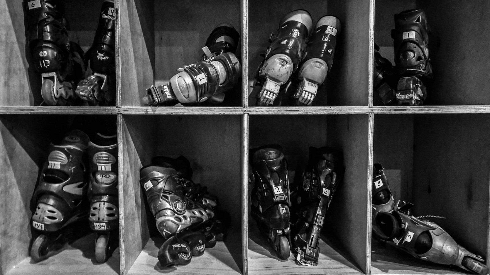

Inline skates are a type of roller skate used for inline skating. Unlike quad skates, which have two front and two rear wheels, inline skates typically have two to five wheels arranged in a single line. Some, especially those for recreation, have a rubber "stop" or "brake" block attached to the rear of one or occasionally both of the skates so that the skater can slow down or stop by leaning back on the foot with the brake skate. Aggressive inline skates The modern style of inline skates was developed as a substitute for ice skates, for use by a Russian athlete training on solid ground for Olympic long track speed skating events[citation needed]. Life magazine published a photo of American skater Eric Heiden, training for the 1980 Olympics, using such skates on a Wisconsin road. During the late 1980s and early 1990s, Rollerblade, Inc., a company founded by Scott and Brennan Olson in Minneapolis, Minnesota, widely promoted inline skating through the registered trademark Rollerblade.

John Joseph Merlin experimented with single- to many-rowed devices worn on feet in 1760.[3] Inline skates, skates designed to work like ice skates during periods of warm weather, were invented by Louis Legrange of France in 1849.[4] Legrange designed the skates for an opera where a character was to appear to be skating on ice.[4] The skates were problematic and unsuccessful as the wearer could not turn nor could they stop.[4] At some point between 1895 and 1899 the UK engineering company D. Napier & Son made Ritter "road skates", which had two comparatively large wheels, front and back, on each skate.[5] The first U.S. patent for modern in-line skates, designed to behave like ice runners with individually sprung and cushioned wheels, was granted under patent number US 2644692 in July, 1953 to Ernest Kahlert of Santa Ana, CA. They were briefly described in the April 1950 issue of "Popular Mechanics" and again in the April 1954 issue of "Popular Science" in the section called "New Ideas from the Inventors."[6] Inline skates appear in the 1962 Russian film Koroleva benzokolonki (Gas Station Queen) at 9m23s. In Canada in 1972, Mountain Dew attempted to sell Mettoy's product the "Skeeler", an inline skate that was developed for Russian hockey players and speed skaters.[7] The first commercially available inline skate for this form of Rollerskating is in 1987 by Rollerblade. In 1996, Jason Lewis completed the first solo crossing of the USA on inline skates, part of Expedition 360, a successful attempt to circumnavigate the globe using only human power.[8][9] En route he was hit by a car in Colorado, breaking both legs. After nine months he completed the journey from Fort Lauderdale to San Francisco. In 2012, Kacie Fischer became the first woman, and the fastest person, to inline skate across the United States; she skated from California to Florida in 47 days.